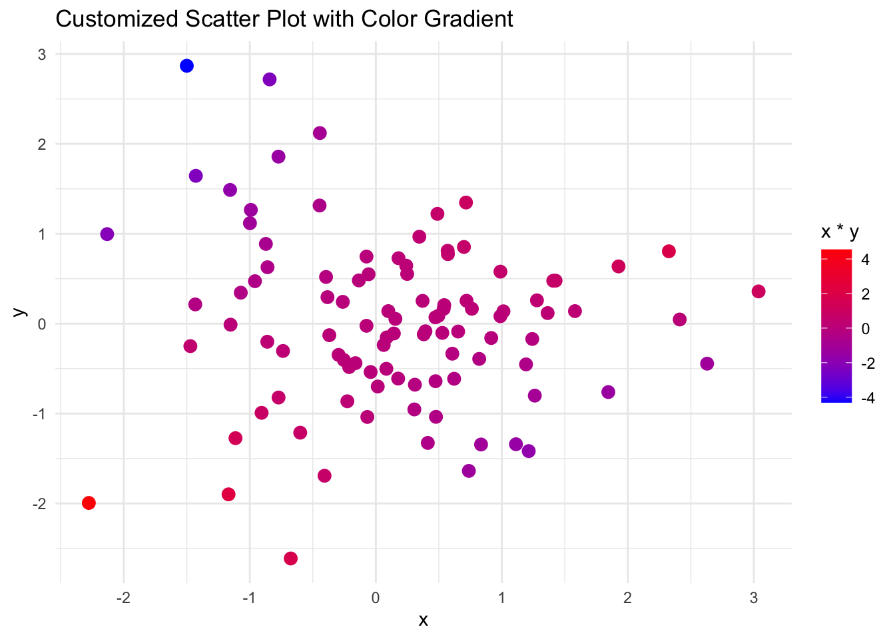
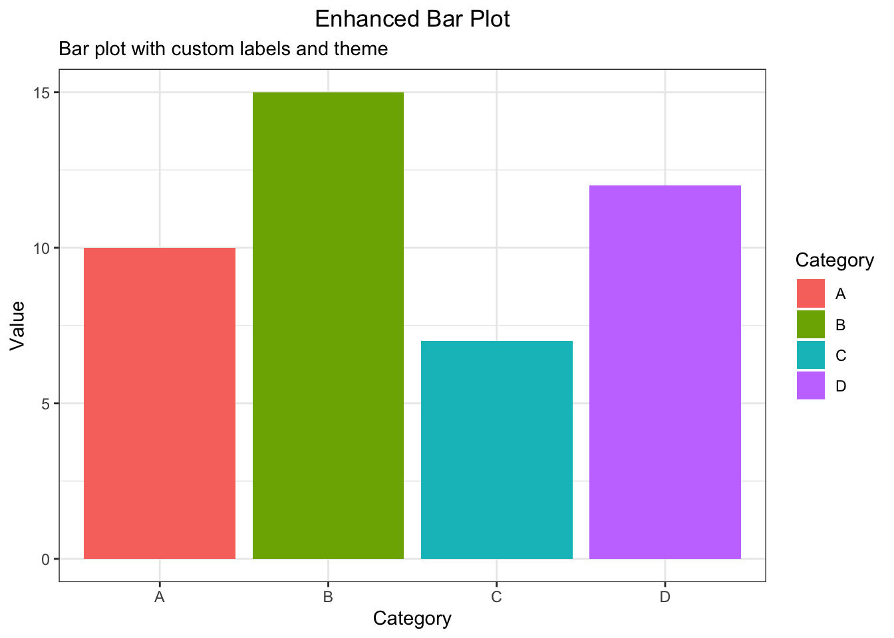

Part III: Advanced Data Visualization (30 minutes)
Creating customized plots with ggplot2
# Load ggplot2 package
library(ggplot2)
# Example: Customized scatter plot with ggplot2
data <- data.frame(x = rnorm(100), y = rnorm(100))
ggplot(data, aes(x = x, y = y)) +
geom_point(aes(color = x*y), size = 3) +
scale_color_gradient(low = "blue", high = "red") +
ggtitle("Customized Scatter Plot with Color Gradient") +
theme_minimal()
Adding titles, labels, and themes to plots
# Example: Enhanced bar plot with titles, labels, and a custom theme
data <- data.frame(
category = c("A", "B", "C", "D"),
value = c(10, 15, 7, 12)
)
ggplot(data, aes(x = category, y = value, fill = category)) +
geom_bar(stat = "identity") +
labs(title = "Enhanced Bar Plot",
subtitle = "Bar plot with custom labels and theme",
x = "Category",
y = "Value",
fill = "Category") +
theme_bw() +
theme(plot.title = element_text(hjust = 0.5))